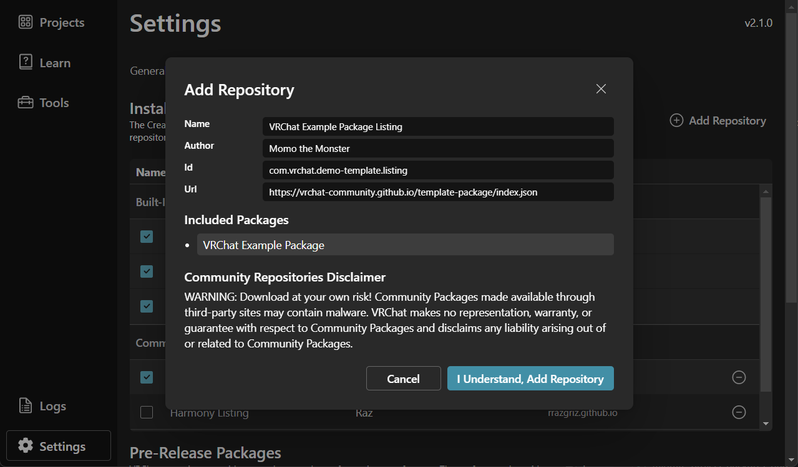
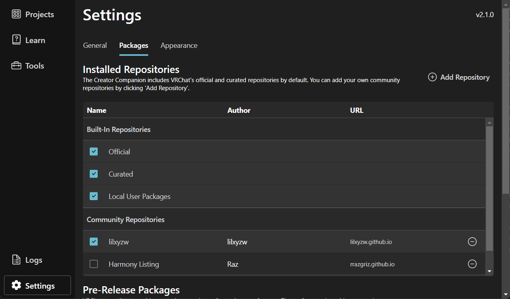
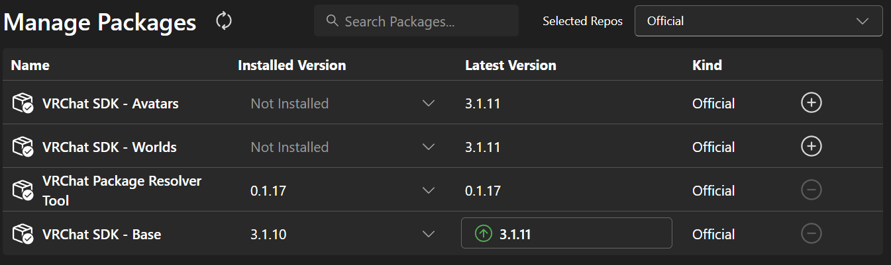

VR Vlog Avatar Exporter
自分のアバターを
VR Vlogで使う
エクスポーターでQRコードを作り、スマホで読み取ってアバターを受け取ります。
アバターとlilToonを導入したUnity 2022.3のプロジェクトと、最新のVR Vlogを入れたスマホを用意してください。
エクスポーターを入れる
最新の正式版をインストールします。使うプロジェクトをバックアップし、Unityを閉じてから始めます。使っている管理アプリを選んでください。
配布元を追加する
下のボタンを押し、ALCOMで内容を確認して「VPMリポジトリを追加」を押します。
VCC / ALCOMに追加ALCOMが開かない場合
「パッケージ&テンプレート」→「VPMリポジトリ」→「VPMリポジトリを追加」を開き、次のURLを貼り付けます。
「VPMリポジトリを追加」を押します。表示された内容を確認してから、もう一度「VPMリポジトリを追加」を押します。
最新版をインストールする
「プロジェクト」から、アバターを入れたプロジェクトの「管理」を開きます。追加したエクスポーターの「インストール済み」欄で、正式版のうち一番新しいバージョン番号を選びます。続いて、変更内容を確認して「適用」を押します。

ALCOMのパッケージ一覧。画面内のエクスポーター名は変更前のものです。 導入済みの場合も、更新がないか確認してください。最新の正式版が入っていれば、次へ進んでください。
Unityを開く
「UNITYを開く」を押し、読み込みが終わるまで待ちます。
配布元を追加する
下のボタンを押し、VCCで内容を確認して「I Understand, Add Repository」を押します。
VCC / ALCOMに追加
追加確認画面の右下（VCC公式の参考画像） VCCが開かない場合
「Settings」→「Packages」→「Add Repository」を開き、次のURLを貼り付けます。「Add」を押し、内容を確認して「I Understand, Add Repository」を押します。

Packagesタブの追加ボタン（VCC公式の参考画像） 最新版をインストールする
「Projects」でアバターを入れたプロジェクトを探し、「Manage Project」を開きます。

Projectsの一覧から使うプロジェクトを探します（実画面） 追加したエクスポーターの「Installed Version」欄で、正式版のうち一番新しいバージョン番号を選びます。

バージョンを選ぶ欄（VCC公式の参考画像） 導入済みの場合も、更新がないか確認してください。最新の正式版が入っていれば、次へ進んでください。
Unityを開く
同じプロジェクトをUnityで開き、読み込みが終わるまで待ちます。
エクスポーターを入れたあとの3ステップ
-
アバターを選ぶ
Unityでアバターを右クリックし、「VR Vlog」→「アプリに転送（かんたん）」を選びます。


Unityの操作画面 -
QRコードを作る
名前・作者名と利用条件を確認し、同意が必要な項目にチェックを入れてから「QRコードを作る」を押します。

Unityの操作画面 -
スマホで受け取る
スマホでVR Vlogアプリを開き、カメラが起動したらPCのQRコードに向けます。
確認画面で「受け取る」を押します。

受け取り確認画面
これで自分のアバターで撮影できます。
詳しい説明・導入で困ったとき
「QRコードを作る」が押せないときは？
転送画面の案内を確認し、名前・作者名の入力や、同意が必要な項目へのチェックを済ませてください。
QRコードはどこで読み取りますか？
スマホ標準のカメラ、またはVR Vlogアプリのカメラで読み取れます。
表情を調整するには？
表情などを詳しく設定したい場合は、Unityで「VR Vlog」→「アプリに転送（通常）」を選びます。
不具合を見つけたら
作者のX（@uribou_vrc）へDMでお知らせください。